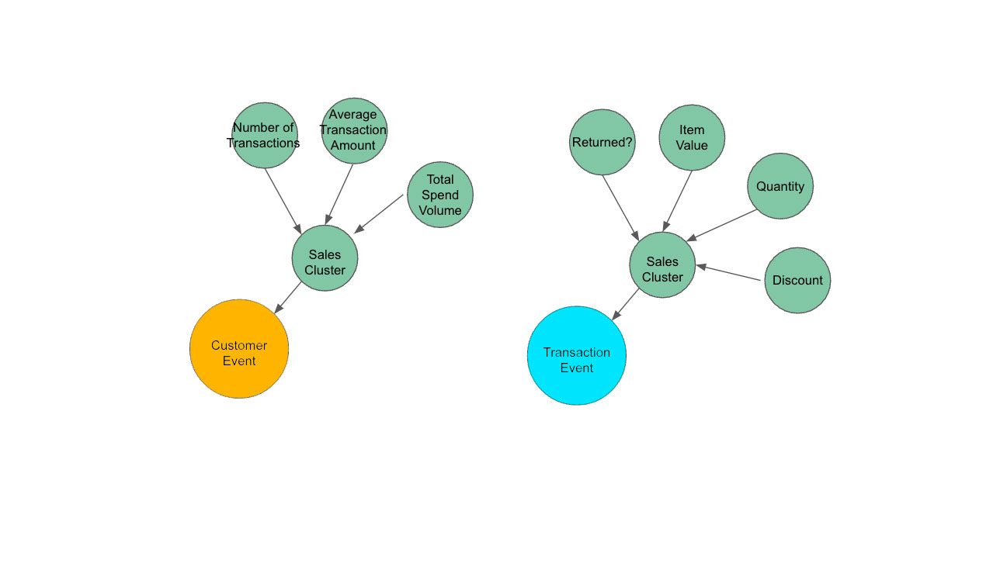

R-K Model
An R-K Model is the fundamental building block of any R-K Diagram. It represents a composite object that can be used to render an R-K Diagram using appropriate filter and linker functions as defined according to the specific use-case. In other words, an R-K Diagram is the rendering of an R-K Model, and the R-K Model serves as the underlying data structure for that render.
All R-K Models must contain the following 3 components:
Structural Graph
Node Masks
Derived Links
1. Structural Graph
The structural graph (S) is the base graph derived through the Hierarchical Embedding Function, also known as the structural graph. The structural graph provides the baseline ontological structure that forms the basis for all other transformations in the pipeline. Because node masks are reductive operations, the number of nodes in the structural graph represents the maximal number of nodes in the R-K Diagram such that |nodes| ∈ S >= |nodes| ∈ R − K Diagram. The structural graph however does not represent that maximal number of edges. The number of possible edges in the R-K Diagram is bounded by the number of combinations of nodes in the structural graph.
- class rktoolkit.models.rkmodel.RKModel(G, mask, edges)
- get()
Get the Graph for RKModel
- Returns
Returns the graphmask for the RKModel
- Return type
GraphMask
Hierarchical Graph
Graph
- class rktoolkit.models.graph.Graph(id=None, *args, **kwargs)
Excerpt from initial paper: https://arxiv.org/pdf/2201.06923.pdf
It is important to note, that in the field of Graph Theory, the term “graph” does not refer to data charts, such as the likes of line graphs or bar graphs pertaining to the graphical visualization of data. Instead, it refers to a set of Vertices (V) (i.e., points or nodes) and Edges (E) (or lines) that connect the vertices. When any two vertices are joined by more than one edge, then such a graph is called a “Multi-graph”. [11][86] A graph without any loops and with a maximum of one edge between any two vertices is called a simple graph. When each and every vertex of a graph is connected by an edge to every other vertex, then such a graph is called a complete graph. Moreover, it is important to note in the context of this paper, a direction is assigned to each edge of a graph to produce what is known as a Directed Graph or Digraph.[50] We shall be dealing with such Directed Graphs for the remaining part of this paper.
NOT threadsafe
TODO: Add more documentation around usage TODO: More tests coverage
- add_edge(e)
Adds an edge to the graph for the given node. Must be an Edge type to be added successfully.
- Parameters
e (Edge) – Edge node to be added to the graph.
- Raises
ValueError – Raises an error if the input is not of the Edge Type
- add_vertex(n)
Adds a vertex to the graph for the given node. Must be a vertex type to be added successfully.
- Parameters
n (Vertex) – Node vertex to be added to the graph.
- Raises
ValueError – Raises an error if the input is not of the Vertex Type
- edge_distance(G, method='jaccard')
Calculate the edge distances using Jaccard method.
- Parameters
G (Graph) – Graph G whose edge distances to self should be calculated.
method (str, optional) – Method to use for finding edge distance, defaults to “jaccard”
- Raises
ValueError – Raises ValueError when Unknown method is selected to compute distances
- Returns
Jaccard distance for the given graph to self graph.
- Return type
float
- get_children(node_id, recursive=False)
Get the children nodes of the given node.
- Parameters
node_id (str) – ID of the node whose children needs to be found
recursive (bool, optional) – Condition to choose if the child nodes be found recursively till leaf node, defaults to False
- Returns
Returns all nodes reachable from the given node ID.
- Return type
set(recursive) OR list(non-recursive)
- get_value_dict(key='value')
- is_connected()
Check if Graph is connected
- Returns
Returns True if the graph is connected, False otherwise.
- Return type
bool
- is_dag()
- node_distance(G, method='jaccard')
Calculate the node distances using Jaccard method.
- Parameters
G (Graph) – Graph G whose node distances to self should be calculated.
method (str, optional) – Method to use for finding node distance, defaults to “jaccard”
- Raises
ValueError – Raises ValueError when Unknown method is selected to compute distances
- Returns
Jaccard distance for the given graph to self graph.
- Return type
float
- similarity(*args, **kwargs)
Returns the similarity coefficient.
- Returns
Similarity coefficient
- Return type
float
- sort(*args, **kwargs)
- topological_distance(G, method='jaccard', weights=[0.5, 0.5])
Calculate the topological distance using the edge and node distances generated for the given graph
- Parameters
G (Graph) – Graph whose topological distance should be found
method (str, optional) – Distance method used to find the edge and node distances, defaults to “jaccard”
weights (list, optional) – Weights for the edges and nodes, defaults to [.5,.5]
- Returns
Topological distance for the graph
- Return type
float
- validate()
Validate if the graph is fully connected, if Yes, find the cycles and return True. Else raise exceptions
- Raises
ValueError – Raises ValueError if graph is not connected
ValueError – Raises ValueError if it’s not a DAG
e – Raises exception ‘e’ if cycles can not be found.
- Returns
Returns True if fully connected.
- Return type
bool
- value_distance(G, method='cossine', key='value', fillValue=0)
Value distance compares the distance value of the nodes across the graph, using the method specified.
For example, cossine distance will unravvel the nodes values into an array, and then use the cossine distance to give the final distance
TODO: More methods TODO: Better explanatations of methods TODO: More tests on this
- weighted_distance(G, topological_method='jaccard', value_method='cossine', key='value', weights=[0.5, 0.5])
Computes a hybrid distance between a value and topological distance. Useful for comparing not only the actual value/ magnitudinal distance and similarity, but also the actual distinction in the topological shape of any two graphs.
Edge
- class rktoolkit.models.graph.Edge(u, v, w=1, type=None, attributes={})
For an undirected graph, an unordered pair of nodes that specify a line joining these two nodes are said to form an edge which represents a relationship or dependence between any two nodes. For a directed graph, the edge is an ordered pair of nodes. The terms “arc,” “branch,” “line,” “link,” and “1-simplex” are sometimes used to describe an Edge in Graph Theory.
TODO: Consider moving this to pydantic.
- to_dict()
returns a tuple of the
TODO: Fix. this should actually be called to_tuple and then TODO: Should also return promoted values
- to_dict should send back dictionary in the form of:
{ ‘u’: a, ‘v’: b, ‘attributes’: c }
Vertex
- class rktoolkit.models.graph.Vertex(id: str, value=None, attributes={})
“Vertex” is a synonym for a node of a graph, i.e., one of the points on which the graph is defined and which may be connected by graph edges. The terms “point,” “junction,” and 0-simplex are also used to describe a Vertex in Graph Theory.
See https://mathworld.wolfram.com/GraphVertex.html#:~:text=%22Vertex%22%20is%20a%20synonym%20for,80). for more information
NOT threadsafe implementation
TODO: Consider moving this to pydantic.
- add_attribute(v: Any, unsafe=True)
adds an attributes
toggle unsafe to allow keys to be overridden that already exist
- to_dict()
converts to dictionary merging attributes to promoted field and sending back
Node
- class rktoolkit.models.graph.Node(*, id: Optional[str] = None, name: Optional[str] = (None,), value: Optional[float] = None, attributes: Optional[dict] = {})
A node represents a distinct object in a graph that has magnitude but no direction and accounts for the quantitative value of a particular property of a variable. A special class of nodes are used in the creation of DAGs (Directed Acyclic Graphs) which have a few unique features beyond that of a normal node, such as checking boundary conditions and an executing function for data transformation which are of interest in the case of building R-K Models.
- attributes: Optional[dict]
- id: Optional[str]
- name: Optional[str]
- value: Optional[float]
2. Node Masks
- class rktoolkit.models.graph.NodeMask(nmasks=[], emasks=[])
A graph mask is a mask over an existing structural graph. It essentially provides an overlay representation, which can be used to filter out particular nodes and edges. Typically,a mask over a node, should also mask child-nodes associated with it. A node mask represents a masking structure that when applied to a structural graph S, reduces the number of nodes into a subgraph S. Node masks in the R-K Model are binary operators, which when set to true, filter a node and its direct children. To derive the node masks, we produce a set of filters Fn(G), which takes in a graph and returns a mask.
- fit(G)
- get_emasks(n)
- get_nmasks(n)
3. Derived Links
Linkage Function
- class rktoolkit.models.linkage.LinkageFunction
A linkage function takes in a list of nodes and returns a list of appropriate edges that defines the linkage between those nodes. The math behind the linkage function is defined as follows: If G = (V,E) is an undirected graph without multiple edges or loops. Let n = |V | and e = |E|. The linkage of G is defined to be the maximum min-degree of any of the subgraphs of G (the min-degree of a subgraph is the least degree of any of its vertices; the degree of a vertex is taken relative to the subgraph). The width of G is defined to be the minimum, over all linear orderings of the vertices of G, of the maximum, with respect to any vertex v, of the number of vertices connected with v and preceding it in the linear ordering. It has also been mathematically proven in Topology that the width of a graph is equal to its linkage.
An example of a linker function is provided in the diagram below in the exact way it is applied in an R-K Model. The same linker functions are applied to two different graphs, providing directed edges across leafs.

ChoiceOfLens
The choice of lens is critical for the basis of ontology and the R-K Model. It is the lens according to which an “event” is determined from, such that “Lens” defines a central-event node called the root node such that all branching nodes and the hierarchy are birthed from the choice of lens. As an example, in the store sales data, there may exist many lenses, such as a Customer lens, or a Transaction lens. Each lens would provide unique events associated with such events, with different structural graphs as the foundation for each R-K Diagram.
The diagrams below show the effect of the lens on the structural graph. To the left, a lens is chosen from a specific “Customer” event. To the right, a lens is chosen from a “transactions” perspective. The values and metrics associated with each lens are related to the respective lens.
TODO: Add info about it from notebook
R-K Model Visualizer
- class rktoolkit.visualizers.visualizer.RKModelVisualizer(ax=None, fig=None)
A user-interface built on top of a particular R-K Pipeline to render each output of the pipeline in sequence along with manual customization options to toggle the lens, range-filters, linkage functions and other boundary conditions necessary to render specific R-K Diagrams from their corresponding R-K Models.
- build(models: RKModel)
Method to build the visualization for the R-K Model.
- Parameters
models (RKModel) – R-K Model whose R-K Diagram needs to built.
- render()
Method to render a R-K Diagram. Utilizes the
pyplot.show()method.
R-K Diagram
An R-K Diagram is the manifestation of an R-K Model upon the application of appropriate “leaf-linker” functions and “range-filter” functions to these models based on specific domain knowledge according to the user’s discretion. It contains the positions of each node, information about how to represent such nodes, as well as edge visualizations. Given any R-K Model, an R-K Diagram serves as a render of the R-K Model in 2D or 3D space. As an R-K Model is a multi-dimensional representation of data, an R-K diagram can display many dimensions in 2D, without data loss that a typical projection model would have. To work effectively and render efficiently with optimal compute power, the visualized space is always kept at nD < 4.
We tend to use a radial layout for our demonstrations, but any graph layout can be used, with a preference toward deterministic layouts. We prefer deterministic layouts, because it allows easier qualitative comparisons of R-K Diagrams to analyze their similarity and differences.The R-K Pipeline uses code package: pyplot to render these final visualizations in 2D using mathematical projection and isometric-compression techniques.
Refer to :ref: Visualizer package <rktoolkit.visualizers> for more visualizer modules and to the General Applications and Examples for usage.